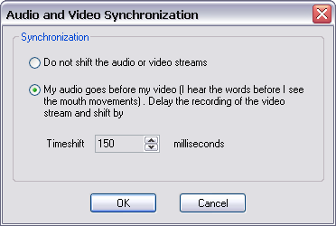

(From the main menu, choose Options>Audio Options->Audio and Video Synchronization)

If the video and audio track of your recording is not in phase during playback, you can try to shift a stream slightly to make them back in sync. This may happen if you are recording the output of a webcam. The amount of shift is measured in milliseconds, and the appropriate value for the shift can usually be determined after a few trail recordings with different time shift values.
Note: The dialog above only handles the case when the audio streams appear to go before the video.